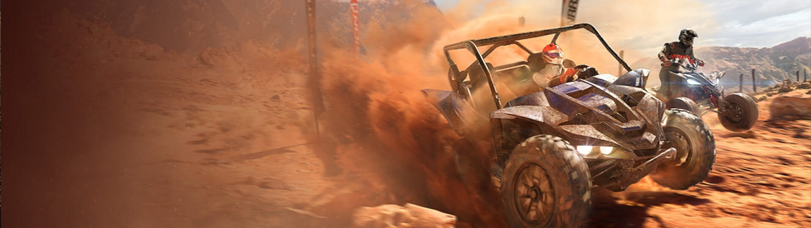

Overpass 2
More informaiton will be available from 16th of October 2023
I became part of the Overpass 2 team in October 2022.
During my time I have played a key role in getting the games from pre-beta to its final shippable state.
More informaiton will be available from 16th of October 2023
I became part of the Overpass 2 team in October 2022.
During my time I have played a key role in getting the games from pre-beta to its final shippable state.